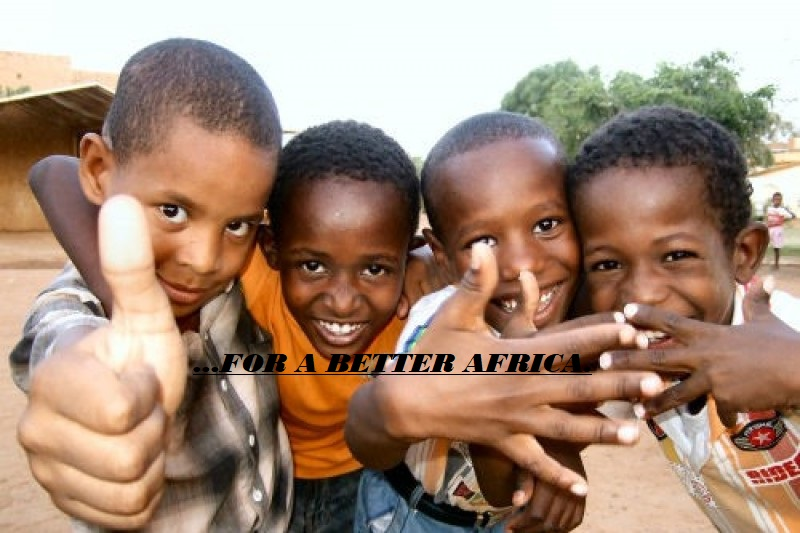
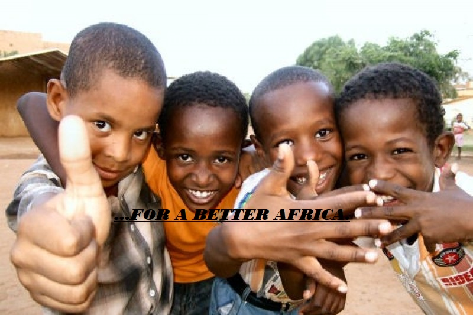
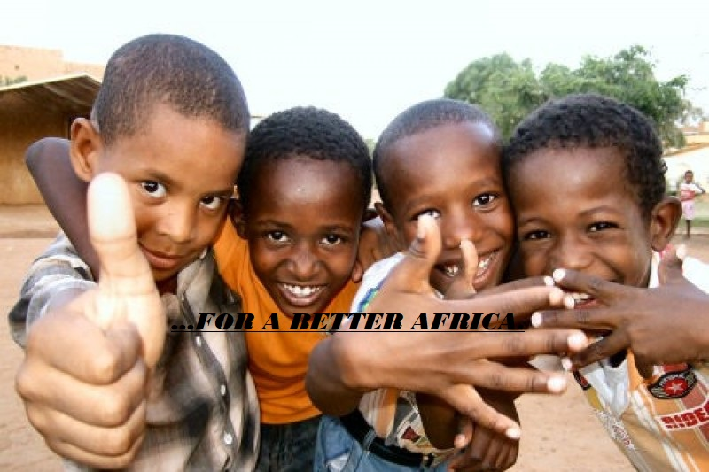
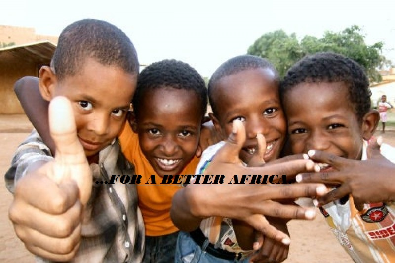

There are many ways to make a difference at the African care without blemish however to actually sponsor a child in Africa is one of the most rewarding. especially for those where voluntere work is not possible. Gone are the days when the idea of becoming a sponsor to a child meant that one child is a village was selected to benefit from 'western' money. That's all changed now. Today, when you sponsor a child in Africa, you are not only making a difference to that child, but also to his or her community as well, as some of the help goes directly to the young person, but within the context of where he or she lives. So, when you sponsor a child, where does your money go and how much does it cost? Your money goes on ensuring the young person receives heath care and education that will take them through to adulthood with the necessary skills and knowledge to be self-sustaining and with the health to ensure they can provide for themselves, their family and community. And the cost, just 50p a day, the price of a newspaper.
People often ask themselves, 'If I sponsor a child, will it make a real difference?' Consider this. There was a doctor who helped others who were victims of the Bali bombing and, being one of the first on the scene, was able to save the lives of many. It turned out he had been a sponsored child and, without the help of someone like yourself, would never have had the opportunity to train to be a doctor and save others. Makes you think, doesn't it? And remember, all those images on the television about starving children are stereotypical (though often true). Most African kids have a cracking sense of humour and have aspirations for a better life. Without you that's probably beyond their reach.
↓ Click the start button below to get started with the sponsor program and to choose a child to sponsor ↓